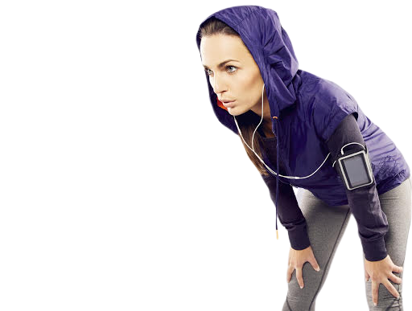
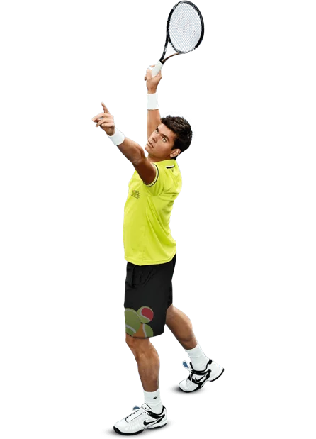

Atividade física é qualquer movimento voluntário produzido pela musculatura que resulte num gasto de energia acima do nível de repouso. Exemplos:passear com o cachorro, dançar, entre outros. Podemos acrescentar que é também qualquer esforço muscular pré determinado, destinado a executar uma tarefa, seja ela um "piscar dos olhos", um deslocamento dos pés, e até um movimento complexo de longa duração em alguma competição esportiva.
Em todo o mundo, um em cada cinco adultos e quatro em cada cinco adolescentes (com idade entre 11 e 17 anos)
não praticam atividade física suficiente. Alguns grupos populacionais têm menos oportunidades de terem uma
vida mais ativa, entre eles: meninas, mulheres, pessoas idosas, com menos recursos financeiros, com defici-
ências e doenças crônicas, populações marginalizada e povos indígenas.
A atividade física regular é fundamental para prevenir e tratar doenças crônicas não transmissíveis (DCNTs),
como as cardíacas, acidentes vasculares cerebrais, diabetes e câncer de mama e de colo do útero. Essas enfer-
midades são responsáveis por 71% de todas as mortes no mundo, incluindo as mortes de 15 milhões de pessoas por
ano com idade entre 30 e 70 anos.
Com o objetivo primordial de incentivar as pessoas a serem mais ativas para um mundo mais saudável, em 2018 a
Organização Mundial da Saúde (OMS) lançou um plano de ação mundial sobre atividade física e saúde para o período
2018 a 2030.
O plano de ação mostra como os países podem reduzir a inatividade física em adultos e adolescentes em 15% até
2030 e recomenda um conjunto de 20 áreas políticas, que combinadas, têm o objetivo de criar sociedades mais ativas
por meio da melhoria os ambientes e oportunidades para pessoas de todas as idades e habilidades para praticarem mais
caminhadas, ciclismo, esportes, recreação ativa, dança e jogos. O documento também pede apoio ao treinamento de profissionais
de saúde e outros profissionais, sistemas de dados mais sólidos, bem como o uso de tecnologias digitais.
O exercício físico constitui uma atividade física sistematizada, repetida, com ritmo e tempo de duração definidos. Quase sempre, é norteado por objetivos específicos, ou seja, é realizado com o intuito de alcançar um determinado resultado ou um condicionamento para o corpo.
anter o corpo em movimento é, sem dúvida, um dos principais pilares de uma vida saudável.
A prática por si só é super benéfica, mas quando aliada a outros hábitos, como a alimentação
adequada e saudável, tende a ser ainda melhor para a saúde. E os resultados disso podem
ser percebidos em qualquer fase da vida!
Quando se fala em uma vida fisicamente ativa logo alguns termos vêm em mente,
começando por atividade física e exercício físico. Embora exista uma diferença conceitual
entre os dois, uma coisa é unânime: ambos fazem bem. Já outra palavra muito disseminada nesse
universo é o sedentarismo, mas para esse caso a dica é uma só: ligar o sinal vermelho!
Para ajudar a entender um pouco mais desses termos e embarcar de vez nessa jornada
saudável, convidamos a Paula Sandreschi, da Coordenação-Geral de Promoção da Atividade Física
e de Ações Intersetoriais do Ministério da Saúde, que explicou a real diferença entre cada um
deles e quais pontos merecem a nossa atenção.
Para começar, ela conta que, apesar do termo sedentarismo ser muito falado, o correto é
comportamento sedentário, que representa o tempo que passamos gastando pouca energia e que
acontece geralmente quando passamos longas horas sentados ou deitados. Por conta da nossa rotina,
principalmente de trabalho e estudo e especialmente em tempos de pandemia, essa é uma conduta muito
comum entre as pessoas.
O problema é que até mesmo no período de lazer temos a tendência de optar por atividades de pouco
gasto calórico. Estamos falando do período prolongado em frente às telas, sejam elas de celulares,
computadores, tablets ou televisores. A situação é mais preocupante em relação às crianças, que estão
abrindo mão das brincadeiras infantis, lúdicas e estimulantes para o seu desenvolvimento, para passar
mais tempo no celular, por exemplo.
Segundo Paula, as evidências científicas mostram que longos períodos em
comportamentos sedentários podem gerar um maior risco de mortalidade,
surgimento de diabetes, doenças cardiovasculares e câncer, independentemente da quantidade
de atividade física feita.
Ela alerta ainda que pessoas portadoras de doenças crônicas, sobrepeso e obesidade,
precisam ter uma atenção ainda maior para a redução do comportamento sedentário, pois
essas consequências podem ser agravadas para elas. Por esse motivo, para todo mundo
que tende a passar longas horas parado, como durante o horário de trabalho, é super
importante realizar algumas pausas, nem que seja para levantar e buscar água.
Agora que já entendemos o que representa o comportamento sedentário
e quais são os seus riscos, chegou a hora de falar sobre como passar
longe dele, seja por meio da atividade física ou do exercício físico.
Como você deve imaginar, ambos são semelhantes de alguma forma, mas escondem
algumas diferenças como explica Paula Sandreschi.
É um comportamento que envolve os movimentos do corpo, que são feitos de maneira intencional.
Desse modo, os movimentos involuntários, como respirar e fazer o coração bater, não contam.
Além disso, a atividade física também envolve uma relação com a sociedade e com o ambiente
no qual a pessoa está inserida. Isso quer dizer que: a sua atividade pode estar presente no
lazer, nas tarefas domésticas ou no deslocamento para a escola ou o trabalho. Por estar presente
de uma forma mais ampla no cotidiano, ela pode ser indicada por qualquer profissional da saúde.
Quando a atividade física é planejada e estruturada com o objetivo de melhorar ou manter
os componentes físicos, como a estrutura muscular, a flexibilidade e o equilíbrio, estamos
falando do exercício físico. Nesse caso, ele geralmente é orientado por um profissional de educação
física. Ou seja, todo exercício físico é uma atividade física, mas nem toda atividade física é um exercício físico.
Segundo Paula, existem evidências científicas que apontam benefícios tanto de
um quanto de outro. Em relação à atividade física, ela pode reduzir os riscos de mortalidade e de
desenvolver doenças como o câncer, diabetes, diabetes gestacional, hipertensão, acidente vascular cerebral
(derrame) e doenças do coração.
Já o exercício físico, além de trazer todos os benefícios que a atividade física também traz, é eficaz
para manter o controle do peso, a redução dos sintomas depressivos e para melhorar a qualidade do sono
e a preservação da cognição, além de também ajudar no tratamento e controle de diversas doenças crônicas.
Além de um benefício geral, Paula explica que a prática regular de ambas modalidades também proporciona
vantagens específicas para cada faixa etária como, por exemplo, reduzir o índice de quedas de idosos e melhorar
o desempenho escolar de crianças e jovens.